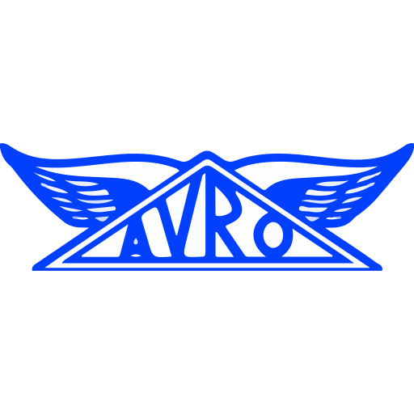

+++
title = "Apache Avro"
linkTitle = "Apache Avro"

+++

<!--

 Licensed to the Apache Software Foundation (ASF) under one
 or more contributor license agreements.  See the NOTICE file
 distributed with this work for additional information
 regarding copyright ownership.  The ASF licenses this file
 to you under the Apache License, Version 2.0 (the
 "License"); you may not use this file except in compliance
 with the License.  You may obtain a copy of the License at

   https://www.apache.org/licenses/LICENSE-2.0

 Unless required by applicable law or agreed to in writing,
 software distributed under the License is distributed on an
 "AS IS" BASIS, WITHOUT WARRANTIES OR CONDITIONS OF ANY
 KIND, either express or implied.  See the License for the
 specific language governing permissions and limitations
 under the License.

-->

<!-- Copy of default blocks/cover shortcode, but without the (hardcoded) td-overlay--dark style class that breaks the white background. -->

<section id="td-cover-block-0"  class="row td-cover-block td-cover-block--height-med td-overlay -bg-black">
	<div class="container-fluid">
				<div class="container td-overlay__inner">
					<div class="">
						<div class="col-12">
							<div class="text-center">
								
								<h1 class="display-1 mt-0 mt-md-0 pb-0">Apache Avro™</h1>
								<h1 class="display-4 mt-0 mt-md-0 pb-0">a data serialization system</h1>
								<div class="pt-3 lead">
									<div class="mx-auto">
										<a class="btn btn-lg btn-secondary mr-3 mb-4" href='{{< relref "/project/download" >}}'>
											Download <i class="fas fa-download ml-2 "></i>
										</a>
									</div>
								</div>
								<h1 class="display-2 mt-0 mt-md-5 pb-0">What is Apache Avro?</h1>
								<h1 class="display-4 mt-0 mt-md-0 pb-0">Apache Avro™ is the leading serialization format for record data, and first choice for streaming data pipelines.
									It offers excellent schema evolution, and has implementations for the JVM (Java, Kotlin, Scala, &hellip;), Python, C/C++/C#, PHP, Ruby,
									Rust, JavaScript, and even Perl.</h1>

									<div class="pt-3 lead">
										<div class="mx-auto">
											<a class="btn btn-lg btn-secondary mr-3 mb-4" href='{{< relref "/docs" >}}'>
												Learn More <i class="fas fa-arrow-alt-circle-right ml-2"></i>
											</a>
										</div>
									</div>
								
								<h1 class="display-2 mt-0 mt-md-5 pb-0">Want to Contribute?</h1>
								<h1 class="display-4 mt-0 mt-md-0 pb-0">We welcome your contributions.The time and attention of our contributors is our most precious resource, and we always need more of it. Our primary goal is to build a welcoming, supporting, inclusive and diverse community.Come join us</h1>
								<div class="pt-3 mt-0 lead">
									<div class="mx-auto">
										<a class="btn btn-lg btn-secondary mr-3 mb-4" href='/project/how-to-contribute/'>
											How to Contribute <i class="fas fa-arrow-alt-circle-right ml-2"></i>
										</a>
									</div>
								</div>

								<h1 class="display-2 mt-0 mt-md-5 pb-0">Apache Avro community</h1>
								<h1 class="display-4 mt-0 mt-md-0 pb-0">Apache Avro is an open source project that anyone in the community can use, improve, and enjoy. We'd love you to join us! Here's a few ways to find out what's happening and get involved.</h1>
								<div class="pt-3 mt-0 lead">
									<div class="mx-auto">
										<a class="btn btn-lg btn-secondary mr-3 mb-4" href='https://github.com/apache/avro'>
											Github <i class="fab fa-github"></i>
										</a>
										<a class="btn btn-lg btn-secondary mr-3 mb-4" href='https://issues.apache.org/jira/projects/AVRO/issues/AVRO-3179?filter=allopenissues'>
											Jira <i class="fab fa-jira"></i>
										</a>
										<a class="btn btn-lg btn-secondary mr-3 mb-4" href='https://the-asf.slack.com/'>
											Slack <i class="fab fa-slack"></i>
										</a>
										<a class="btn btn-lg btn-secondary mr-3 mb-4" href='mailto:dev@avro.apache.org'>
											Mail <i class="fa fa-envelope"></i>
										</a>
									</div>
								</div>
						</div>
						</div>
					</div>
				</div>
			</div>
	</div>
</section>


{{< blocks/section color="dark" type="features">}}
<!-- Note: the number of feature blocks should be a multiple of 3 for optimal display -->

{{% blocks/feature icon="fab fa-java" title="Getting started with Java" url="/docs/1.11.1/getting-started-java" %}}
For Java / JVM users, find out everything you need to know about specifying a schema, (de)serializing Avro data and code generation.
{{% /blocks/feature %}}

{{% blocks/feature icon="fab fa-python" title="Getting started with Python" url="/docs/1.11.1/getting-started-python" %}}
For Python users, find out everything you need to know about specifying a schema and (de)serializing Avro data.
{{% /blocks/feature %}}

{{% blocks/feature icon="fad fa-comments" title="Join Our Community!" url="/community/" %}}
Learn from or connect with other users in our open and welcoming community. We'd love to hear from you!
{{% /blocks/feature %}}

{{< /blocks/section >}}
